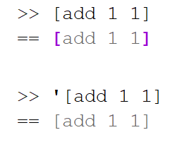

With the new binding model tending to have things sparsely bound, it helps to know what is and isn't bound.
It seems to me it would be very useful (and educational) in rich consoles to make the rendering of code reflect the binding status.

So there you can see that a plain block will evaluate so the block itself is bound, while the contents are left unbound. A quoted block will be all unbound.
Even better would be if you could hover over the bound bits and see what they were bound to. It may be best if the coloring was very subtle by default (e.g. just bold black vs a dark gray) and then if you hovered, maybe it would colorize it... perhaps even making things bound the same match colors.